1. SO Windows
1.1 Servidor NFS
Lo primero que haremos será poner ip estática a nuestro Windows 2008 Server R2 Datacenter.
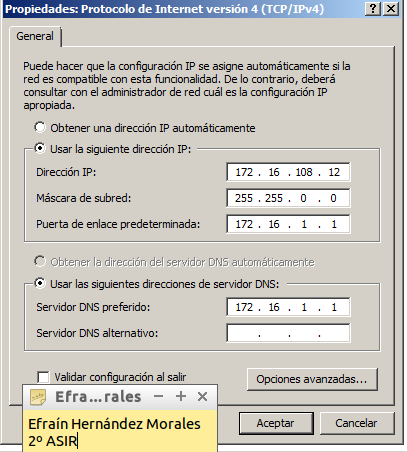
A continuación, modificamos el nombre del equipo y lo unimos al Grupo de Trabajo "AULA 108".
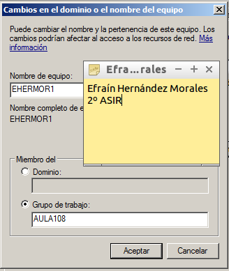
El siguiente paso será agregar un nuevo rol al servidor. Vamos a "Agregar Roles del servidor" y añadimos "Servicios de Archivo".
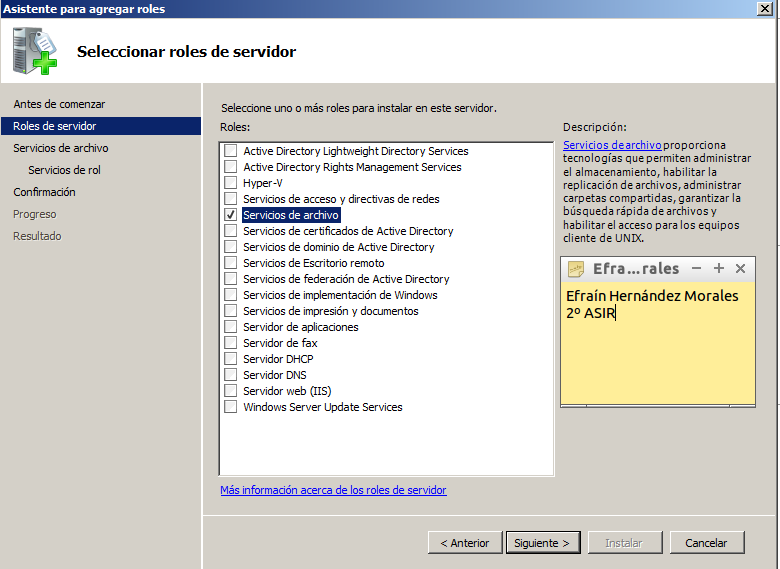

Ahora, vamos al panel de administración para ver si se ha instalado de forma correcta el NFS.
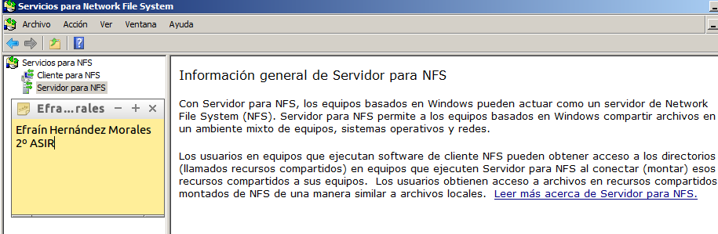
Tras esto, vamos a Disco Local C y creamos la carpeta "export". Y dentro de "export", creamos las carpetas "public" y "private".
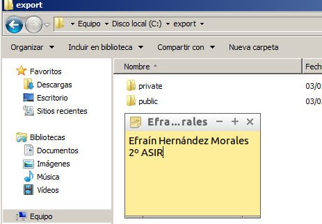
- c:\export\public. Picar en la carpeta botón derecho propiedades -> Compartir NFS, y configurarla para que sea accesible desde la red en modo lectura/escritura con NFS
- Cc:\export\private. Picar en la carpeta botón derecho propiedades -> Compartir NFS, y configurarla para que sea accesible desde la red sólo en modo sólo lectura.
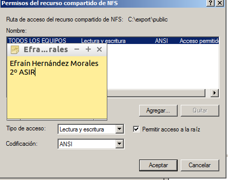
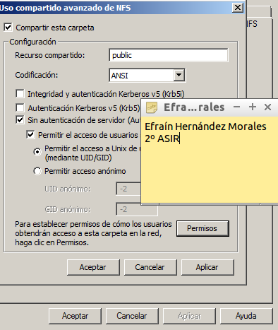
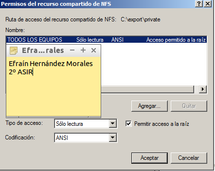
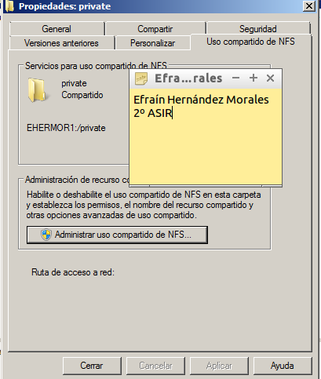
1.2 Cliente NFS
Tras tener listo nuestro nuestro servidor NFS Windows, ahora vamos a nuestro cliente que será un Windows 7 Enterprise. El primer paso será cambiar el nombre del equipo y añadirlo al grupo de trabajo "AULA 108".
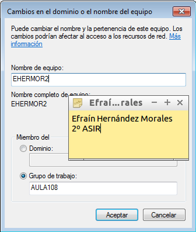
Después vamos a Panel de Control -> Programas -> Activar o desactivar características de Windows. Y activamos lo siguiente.
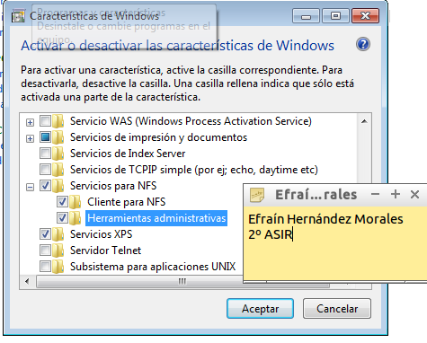
Para iniciar el servicio NFS en el cliente, abrimos una consola con permisos de Administrador, y ejecutamos el siguiente comando:
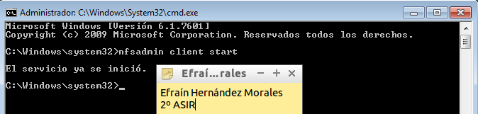
Ahora necesitamos montar el recurso remoto para poder trabajar con él. Para montar el recurso (esta vez no lo hacemos con Administrador) y escribimos:

Vamos a comprobar si se ha montado:
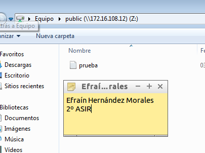
Si intentamos crear algo en privado que no tenemos permisos, pasa lo siguiente:
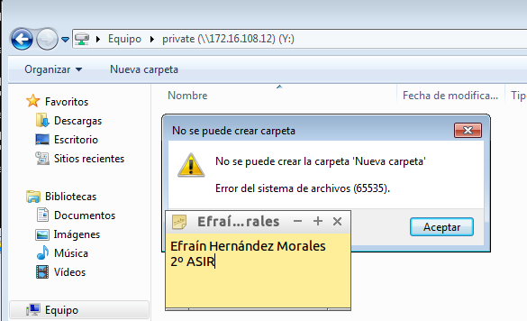
2. SO GNU/Linux
2.1 Servidor NFS
Antes que nada pondremos la ip de nuestro servidor en estática.
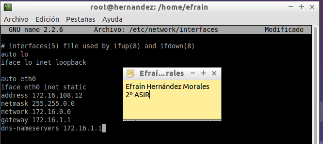
Ahora, vamos al /etc/hosts y añadimos el nombre de equipo tanto al cliente como al servidor.
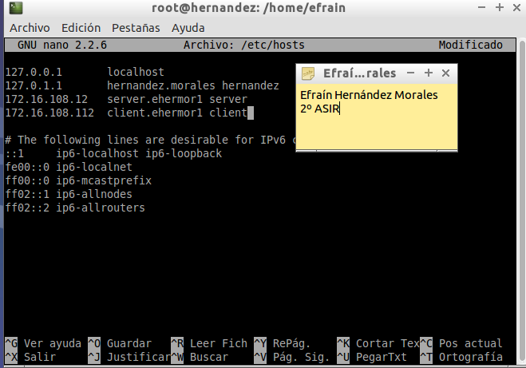
Crear las siguientes carpetas/permisos:
mkdir /var/export/public
chown nobody:nogroup /var/export/public
mkdir /var/export/private
chown nobody:nogroup /var/export/private
chmod 770 /var/export/private
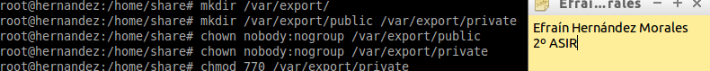
Vamos configurar el servidor NFS de la siguiente forma:
- La carpeta /var/export/public, será accesible desde toda la red en modo lectura/escritura.
- La carpeta /var/export/private, sea accesible sólo desde la IP del cliente, sólo en modo lectura.
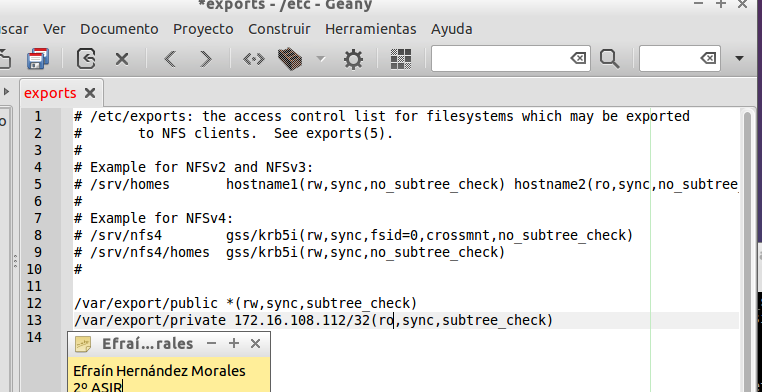
Reiniciamos el servidor NFS.
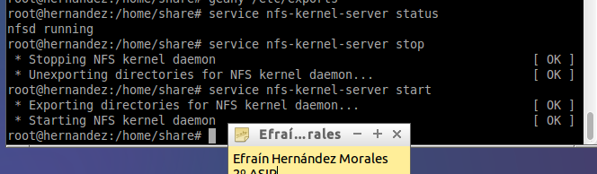Mostramos la lista de recursos exportados por el servidor NFS.
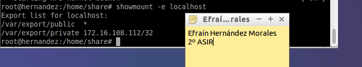2.2 Cliente NFS
Recordamos instalar el servicio nfs:
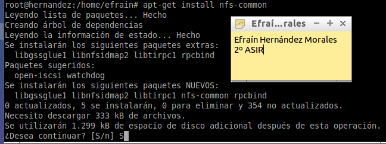
Ponemos la ip del cliente en modo estático:
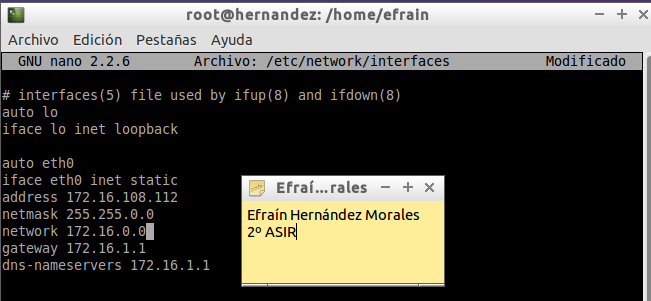
Ponemos los equipos del cliente y del servidor en el /etc/hosts:
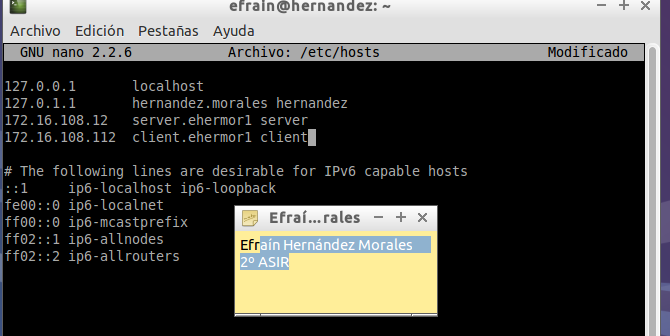
Comprobamos si hay el cliente y el servidor se ven:
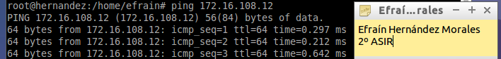
Ahora le hacemos un nmap al servidor para ver que servicios está ofreciendo:
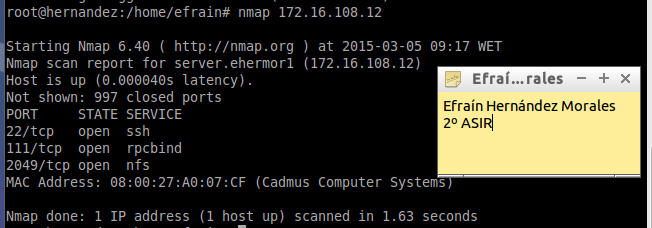
Vemos la lista de recursos disponibles en el servidor nfs:
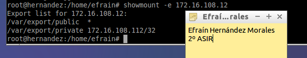
Tras esto, creamos las siguientes carpetas que serán las que se monten con las del servidor:
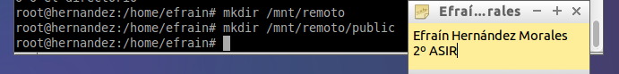
Montamos las siguientes carpetas:
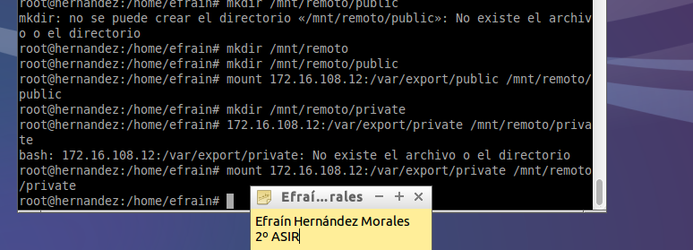
Comprobamos si se han montado:
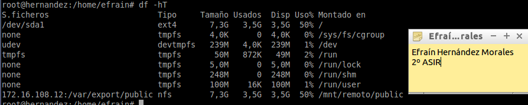
Ahora, creamos un archivo para ver si se muestra en el servidor.
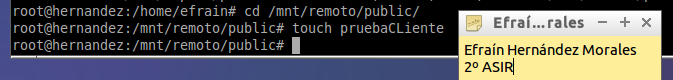
Vemos que se muestra en el servidor.
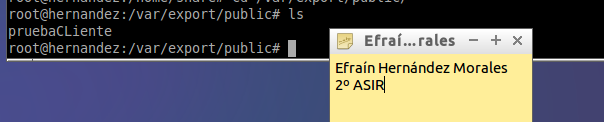
Ai ahora intentamos crear un archivo en la carpeta privada, nos muestra un error. Nos indica que es de sólo lectura.
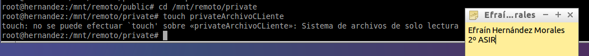
Por último, para evitar que a la hora de reinicar se desmonten las unidades. Vamos a "/etc/fstab" y añadimos el siguiente código:
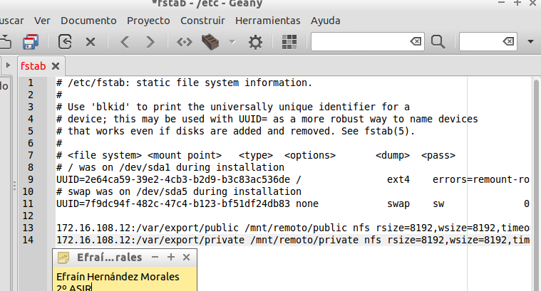DESCARGA ARCHIVO fstab.txt (Pinchar sobre el enlace y darle a abrir en pestaña nueva para ver contenido)
3. PREGUNTAS
- ¿Nuestro cliente GNU/Linux NFS puede acceder al servidor Windows NFS?
Si se puede.
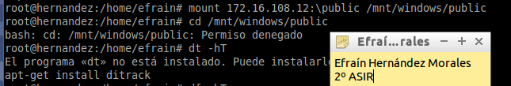
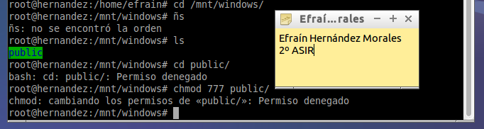
- ¿Nuestro cliente Windows NFS podría acceder al servidor GNU/Linux NFS?
No da error a la hora de montarse pero no me muestra nada.
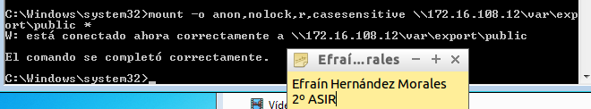
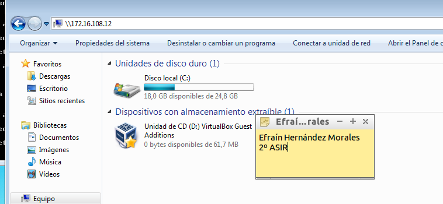